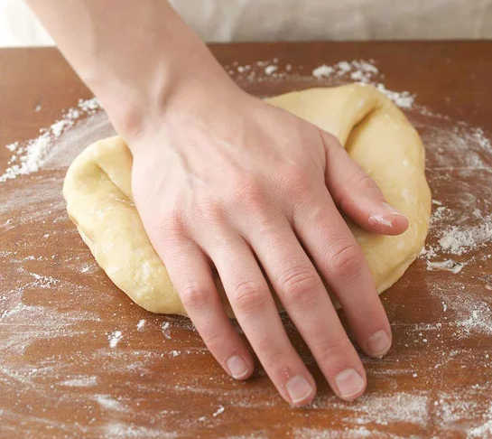
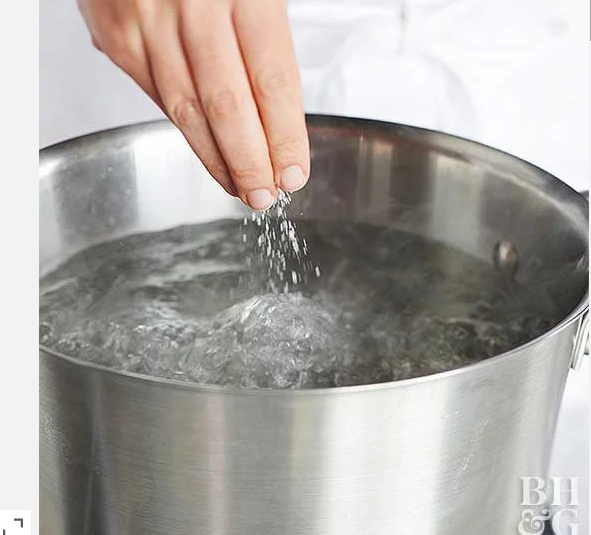
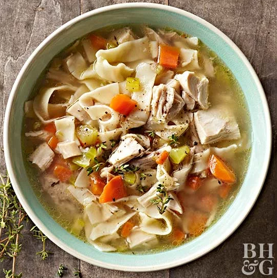

Noodles
Noodles are pretty good, and i'm gonna show you how to make them
1. Gather the ingredients
- 2 to 2-1/4 cups all-purpose flour.
- 1/2 teaspoon salt.
- 2 egg yolks and 1 whole egg, lightly beaten.
- 1/3 cup water.
- 1 teaspoon vegetable oil or olive oil.
- All-purpose flour.
Now that you got the ingredients, let do them!
2. Mix them
-In a large bowl stir together 1-3/4 cups of the flour and the salt. Make a well in the center of the flour mixture.
-In a small bowl combine egg yolks and whole egg, the water, and oil. Add the egg mixture to the flour mixture,
stirring to combine.
3. Knead the Dough
-Sprinkle a clean kneading surface with the remaining flour. Turn dough out onto floured surface. Knead
the dough until it is smooth and elastic (8 to 10 minutes total).

Tip: To knead dough, fold the dough and then push it with the heel of your hand. Turn the dough and repeat folding and pushing until the dough reaches a smooth and elastic consistency.
4. Cut the noodles
-Loosely roll the dough into a spiral.
-Cut the spiral crosswise into 1/4-inch-wide strips.
-Unroll the strips to separate.
-Cut the strips into 2- to 3-inch lengths.
-At this point you can cook the noodles immediately, or dry and store them (see next steps).
5. To Store Cut Noodles
-Spread the noodles on a wire cooling rack.
-To store in the refrigerator: Let the noodles dry for 2 hours. Place in an airtight container and chill for up to 3 days.
-To freeze: Dry the noodles for at least 1 hour; place them in a freezer bag or freezer container and freeze for up to 8 months.
How to cook them

Tip: If serving your fresh homemade noodles recipe as a side dish, plan on 1-1/2 to 2 ounces for each side-dish serving. For main dishes, plan on 3 ounces fresh homemade egg noodles per serving.
Here's how to cook homemade egg noodles for serving and for adding to recipes.
-Fill a large pot with 3 quarts water. Bring the water to boiling; if desired, add 1 teaspoon salt.
-Add noodles a few at a time so the water does not stop boiling. (This also prevents the noodles from sticking together).
-Reduce the heat slightly and boil, uncovered, stirring occasionally, for 1-1/2 to 2 minutes or until the pasta is aldente (flexible but still slightly firm at the center).

you mastered noodles, you are a master now, you can make noodles anytime you want, even when you aren't hungry